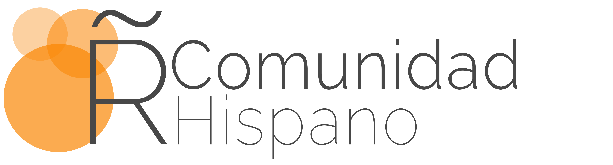

Inicialmente “Asociación de Usuarios de R de España”
Registro de asociaciones: restricciones en los nombres de asociaciones, en particular con la palabra “usuarios” (ni R-es, …)
Tras varias iteraciones, nos dejaron poner ese nombre
Fundacionales: 54
Actuales: +500
Fomentar el avance del conocimiento y uso del lenguaje de programación R y el desarrollo de la profesión en todas sus vertientes, especialmente la investigadora, docente y empresarial.
Artículo 5 de los estatutos
No puedo mejorar este resumen de Carlos Gil (@gilbellosta), principal “culpable” de todo esto:
15 ediciones de las jornadas interrumpidas solo por el COVID
Website: http://r-es.org
Twitter: https://twitter.com/R_Hisp
Grupo de WhatsApp de socios
Google workspace para todos los socios
13 grupos locales, algunos muy activos
Apoyo institucional SEIO en los congresos
Canarias (intermitente)
Málaga (retomando)
Córdoba
Asturias
Almería
Valencia
Barcelona
Salamanca
R Ladies: Madrid, Barcelona, Bilbao, Valencia
RStudio y tidyverse por todas partes
Licencia “Pro” (incluido RSConnect) gratuita para educación
Aplicaciones Shiny: Algunos ejemplos
useR! conferences + rstudio::conf + …
R Consortium: financiación, canal de YouTube
R mezclado, no agitado: python, JavaScript, h2o, stan, spark, …
(todo lo que has visto aquí está hecho con R + markdown)
class: large
Consolidar relación con los grupos locales y con los grupos R-Ladies, y entre ellos
Mantener el nivel de las jornadas anuales
Mejorar comunicación con socios y contenido web
Desarrollar los estatutos
class: large
Cuota de inscripción congelada desde la creación de la asociación (0 EUR)
Formulario en la web
Solo se envían correos imprescindibles
–
Envíos hasta el 15 de septiembre: http://r-es.org/XIjuR/
Cuota reducida para socios
Madrid, Sevilla, Málaga, Murcia, Canarias, Asturias, Galicia, Almería, …
Consulta sus agendas en sus sitios web o cuentas de Twitter
class: large background-image: url(img/iwantu.gif) background-size: 100% background-position: 50% 50%
class: inverse, middle, center background-image: url(img/antetodo.png) background-size: 15% background-position: 50% 90%
http://blog.uclm.es/emiliolcano
http://emilio.lcano.com/p/seio2019
Seminario grupo de investigación MoDAE de la UIB